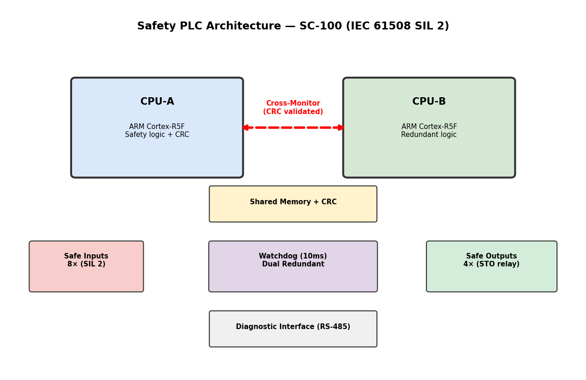
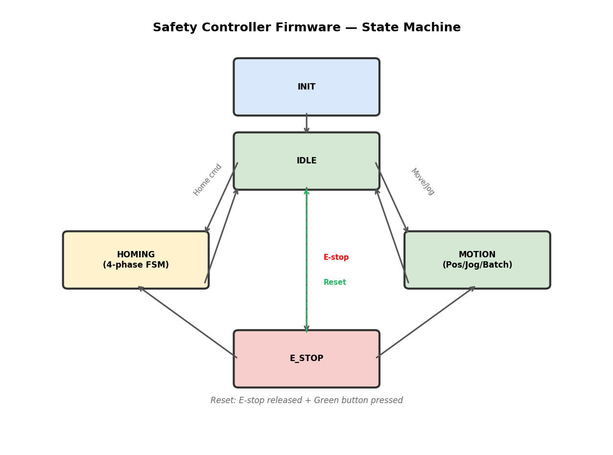
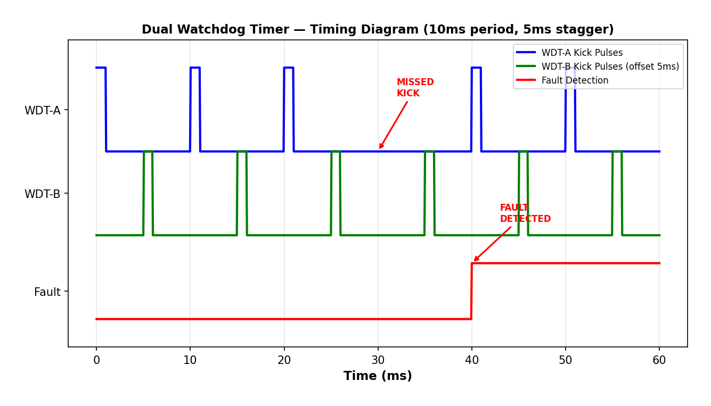

This document describes the firmware architecture of the Contoso Robotics Safety Controller SC-100, the dual-channel safety system integrated into every CoBot Pro 500 and CoBot Pro 700 control cabinet. The SC-100 firmware is certified to IEC 61508 SIL 2 and ISO 13849-1 PLe Category 4. For user-facing configuration instructions, refer to the Safety Controller Configuration guide in the Support documentation. For compliance certifications and safety marketing claims, see the Safety Certification Factsheet from Contoso Robotics Marketing.

The SC-100 implements a Category 4 architecture per ISO 13849-1, using two independent processing channels with cross-comparison:
The primary safety channel runs on the ARM Cortex-R5F dual-core lockstep processor at 800 MHz. In lockstep mode, both cores execute identical instructions in parallel and a hardware comparator verifies that outputs match on every clock cycle. Any mismatch triggers an immediate Non-Maskable Interrupt (NMI) that forces the safety outputs to the safe state (de-energized) within 1 clock cycle (1.25 ns). The R5F has 512 KB of tightly-coupled memory (TCM) with ECC protection (SECDED — Single Error Correction, Double Error Detection).
The redundant channel is implemented on a Xilinx Artix-7 (XC7A35T) FPGA configured as an independent safety monitor. The FPGA reads joint encoder positions and velocities via a separate SPI bus (physically distinct from the main controller's encoder path) and independently computes joint-space safety metrics at 4 kHz. The FPGA design is generated from a qualified model-based design tool and undergoes formal verification against the safety requirements specification.
Channel A and Channel B exchange safety-critical data (joint positions, velocities, computed safety function status) over a dedicated point-to-point SPI link at 10 MHz. The comparison protocol:

The SC-100 firmware operates as a deterministic state machine with the following states:
| State | Description | LED Indicator |
|---|---|---|
| INIT | Power-on initialization. Clock, memory, and peripheral setup. | Yellow — blinking fast |
| SELF_TEST | ROM CRC check, RAM march test (March C−), watchdog test, I/O loopback test. Duration: 3.5 seconds. | Yellow — blinking slow |
| IDLE | Self-test passed. Waiting for application processor handshake to enter monitoring mode. | Green — solid |
| MONITORING | Active safety monitoring. All safety function blocks executing at 4 kHz. | Green — blinking |
| SAFE_STOP_1 (SS1) | Controlled deceleration to zero velocity, then transition to STO. Maximum deceleration time: 500 ms. | Orange — solid |
| SAFE_STOP_2 (SS2) | Controlled deceleration to zero velocity, then hold position with Safe Operating Stop (SOS). | Orange — blinking |
| STO | Safe Torque Off. All motor drive enable signals de-asserted. Robot is gravity-settling. | Red — solid |
| FAULT | Unrecoverable fault detected (hardware failure, cross-channel disagreement). Requires power cycle and service intervention. | Red — blinking |

The SC-100 employs a dual-redundant watchdog architecture to detect firmware hangs or timing violations:
The WWDG must be serviced within a specific time window — not too early and not too late. The window is configured as [200 µs, 250 µs] relative to the 250 µs safety cycle start. Servicing before 200 µs (indicating the safety loop completed too fast, possibly skipping computations) or after 250 µs (indicating a timing overrun) both trigger an NMI. The WWDG is clocked from an independent 32 kHz RC oscillator, separate from the main system clock, to detect clock failures.
The IWDG is a simple countdown timer with a 10 ms timeout, serviced by the main safety loop. If the loop fails to execute for 10 ms (40 missed safety cycles), the IWDG triggers a hardware reset of the safety controller, forcing a transition to STO via the fail-safe output logic (outputs are de-energized by default when the reset line is asserted). The IWDG uses a dedicated low-speed oscillator (LSI, 40 kHz ± 10%) independent of all other clock domains.
The SC-100 firmware implements the following IEC 61800-5-2 safety function blocks, all executing at the 4 kHz safety cycle rate:
Removes the power stage enable signal from all six joint motor drives within 10 ms of activation. Implemented as a hardware-assisted function: the R5F de-asserts a GPIO line that is AND-gated with the FPGA's independent STO output before reaching the motor drive enable input. Both channels must agree to keep drives enabled.
Monitors TCP Cartesian speed and individual joint velocities against configurable thresholds. Four speed limit sets (SLS1–SLS4) can be defined, selectable via safe digital inputs. Default SLS1: TCP speed ≤ 250 mm/s, each joint ≤ 60°/s. Violation triggers SS1 with a 100 ms reaction time (detection + deceleration initiation).
Continuously monitors that actual speeds remain within the currently active SLS limits. Unlike SLS (which triggers a stop), SSM provides a safe binary output signal indicating "speed OK" or "speed exceeded" for integration with external safety systems (e.g., light curtain muting).
Monitors that joint positions remain within ±0.5° of the reference position captured when SOS was activated. If any joint drifts beyond this window (due to external forces, gravity, or drive failure), SOS escalates to STO. Position monitoring runs at 4 kHz with encoder data cross-checked between Channel A and Channel B.
The SC-100 provides the following safety-rated I/O channels:
| Pin | Type | Function | Default Configuration |
|---|---|---|---|
| SI1 / SI2 | Safe Input (dual-channel) | Emergency Stop | NC (normally closed), monitored |
| SI3 / SI4 | Safe Input (dual-channel) | Protective Stop / Safety Gate | NC, monitored |
| SI5 | Safe Input (single) | Reduced Speed Select | PNP, active high |
| SI6 | Safe Input (single) | Enable Switch (3-position) | 3-position deadman |
| SO1 / SO2 | Safe Output (dual-channel) | STO Status / External Contactor | Dual PNP, 0.5 A max |
| SO3 | Safe Output (single) | SSM Status (Robot Moving) | PNP, 0.5 A max |
| SO4 | Safe Output (single) | Fault Status | PNP, 0.5 A max |
All safe inputs include test-pulse diagnostics: the SC-100 periodically de-energizes the sensor supply for 0.5 ms and verifies that the input follows the supply. This detects short-circuits to external voltage sources. Test pulse interval: 50 ms.
Data integrity is enforced throughout the SC-100 firmware using multiple CRC mechanisms:
The SC-100 exposes a diagnostics interface through the EtherCAT CoE object dictionary and via a dedicated UART debug port (115200 baud, 8N1) on the controller board:
For interpreting diagnostic error codes and resolving common SC-100 faults, refer to the Joint Error Troubleshooting Guide in the Support documentation.
Document version 2.1.0 | Last updated: 2025-01-08 | Contoso Robotics Engineering — Safety Team